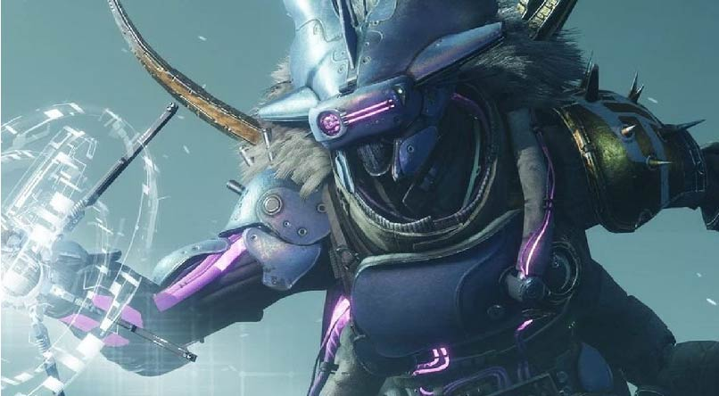

Mithrax has had a lot of character development throught the game, from enemy to ally. Mithrax belongs to an alien specices called the Eliksni, nicknamed the Fallen by the main character. The fallen are scavengers and pirates across the solar system. Fallen Houses are basically like clans and factions within the species with Kells as the House Leader. Mithrax once served as a Captain within the House of the Wolves and his Kell mother. We first meet Mithrax as an enemy while he serves the House of Wolves, he imprisons us briefly and during our escape, we save Mithrax from a Hive Knight. After that, Mithrax has a change of heart. Fleeing the House of Wolves, to start his own House, the House of Light. The House of Light is the only friendly Fallen House within the universe and serves to assist the player.
"Then we accept, with Light in our hearts. We will join you, in your city... beneath the Traveler." — Mithrax, accepting Ikora's offer for the House of Light to join the Last City
"My people shelter beneath the Great Machine... this is beyond simple generosity. I must thank Ikora for her gift." — Mithrax
These are Mithrax's friends :)